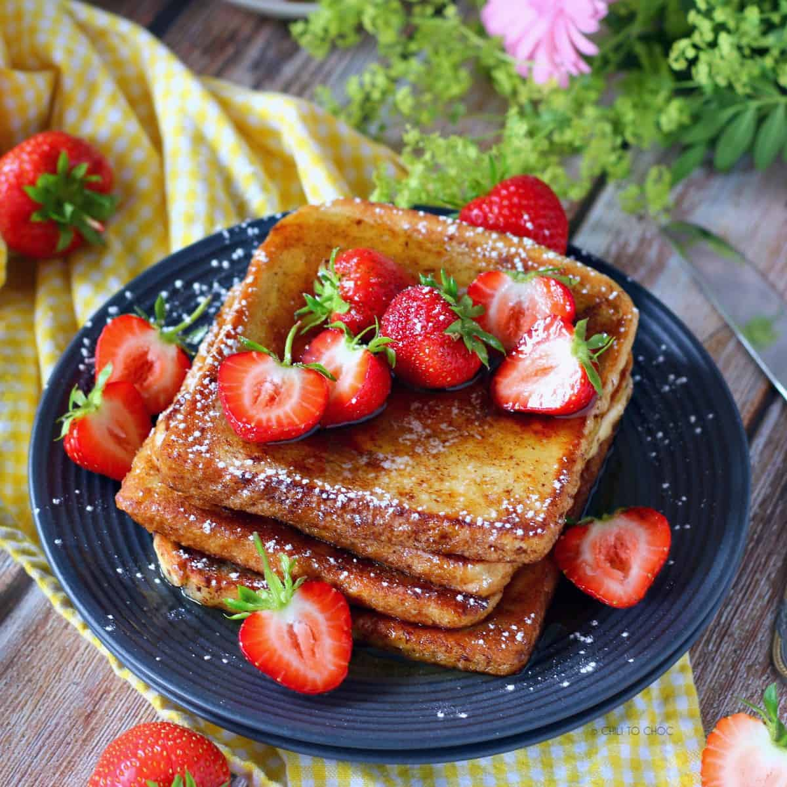

French Toast

As you cook the French toast, bits of that nutty brown-butter flavor
slowly develop — much slower than they would if you cooked with just
butter alone — so the the French toast has time to cook evenly without
burning. A neutral oil, like canola, is the way to go since it won't
disrupt the flavor of the butter.
Ingredients used
- 3 Slices of Brown Bread
- 250ml milk
- 2 eggs
Steps
- beat together egg, milk, salt, desired spices and vanilla.
- Heat a lightly oiled griddle or skillet over medium-high heat.
-
Dunk each slice of bread in egg mixture, soaking both sides. Place in
pan, and cook on both sides until golden. Serve hot.
Home